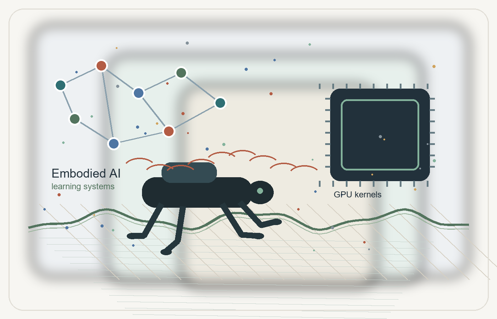

Embodied AI and RL
Robust locomotion policies for quadruped robots, with domain randomization over terrain, friction, mass, inertia, actuator parameters, latency, disturbances, and robot morphology.

Undergraduate Researcher in AI Systems
I am an undergraduate student in Electronic and Computer Engineering in the Zhejiang University and University of Illinois Urbana-Champaign dual degree program. My work connects embodied AI, reinforcement learning, LLM-driven systems, GPU kernels, and low-level computer systems.
Email: yuyangl9@illinois.edu
About
I am currently pursuing a B.S. degree with a 3.78/4.0 GPA, ranking 14/70 in my cohort. My coursework includes artificial intelligence applications, data mining, applied machine learning, machine learning programming methods, computer systems engineering, data structures in C++, digital logic, signal processing, systems foundations, discrete mathematics, linear algebra, and differential equations.
As a research intern at Zhejiang University's CAD&CG Lab, I work on robust locomotion training for quadruped robots under domain randomization. I am also interested in AI-assisted performance engineering, model quantization workflows, fairness evaluation for language models, and operating system kernels.
Research Interests
Robust locomotion policies for quadruped robots, with domain randomization over terrain, friction, mass, inertia, actuator parameters, latency, disturbances, and robot morphology.
Automated pipelines that use large language models to generate, test, and refine executable GPU kernels for quantization and performance-critical tensor workloads.
Evaluation workflows for language model bias and fairness, including prompt design, structured dataset construction, counterfactual comparison, and multi-model experiments.
Kernel-level implementation for RISC-V operating systems, covering device I/O, filesystems, process management, scheduling, pipes, shell utilities, and user-space tooling.
Selected Projects
Built an IsaacLab and RSL-RL based training framework for quadruped locomotion policies. Designed stair-climbing tasks, terrain parameters, sensing configuration, stair-mode detection, command constraints, reward terms, and failure criteria, then transferred the stair logic into procedural quadruped tasks for curriculum-based training on complex terrain.
Designed an automated framework that starts from PyTorch implementations, generates runnable quantization kernels through API-driven LLM calls, and closes the loop with compilation, testing, feedback, and performance tuning. The workflow supports KernelBench-style datasets and exports both KB and SOL formats.
Constructed a conversational bias and fairness evaluation workflow with custom prompts, social-bias datasets, counterfactual comparison, quantitative scoring, data cleaning, and structured JSON outputs. Ran comparative experiments across GPT-3.5, Gemini, Claude, and LLaMA.
Implemented core kernel components inspired by Unix V6, including VIRTIO block device and ramdisk I/O, unified I/O abstraction, KTFS filesystem features, program loading, virtual memory, process and system calls, fork, preemptive scheduling, pipes, shell utilities, block cache behavior, and robust error handling under abnormal input.
Education and Skills
B.S. in Electronic and Computer Engineering, Zhejiang University + University of Illinois Urbana-Champaign dual degree program, 2023 - present.
GPA: 3.78/4.0. Rank: 14/70.
Zhejiang University Third-Class Scholarship twice, Academic Excellence Model Student honor, and college-level Third-Class Scholarship.
Mandarin Chinese, English. TOEFL: 100.
Contact
I am open to research conversations around embodied AI, LLM systems, efficient machine learning kernels, and trustworthy AI evaluation.